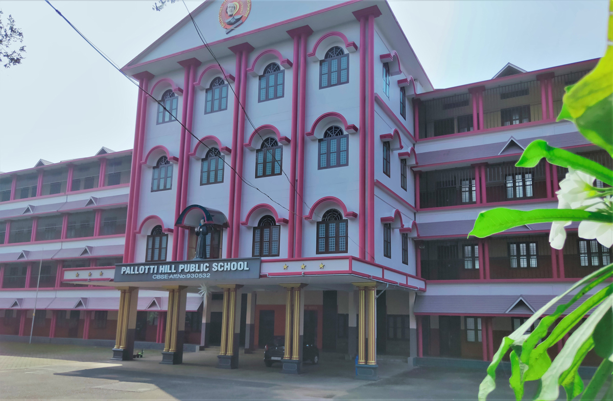
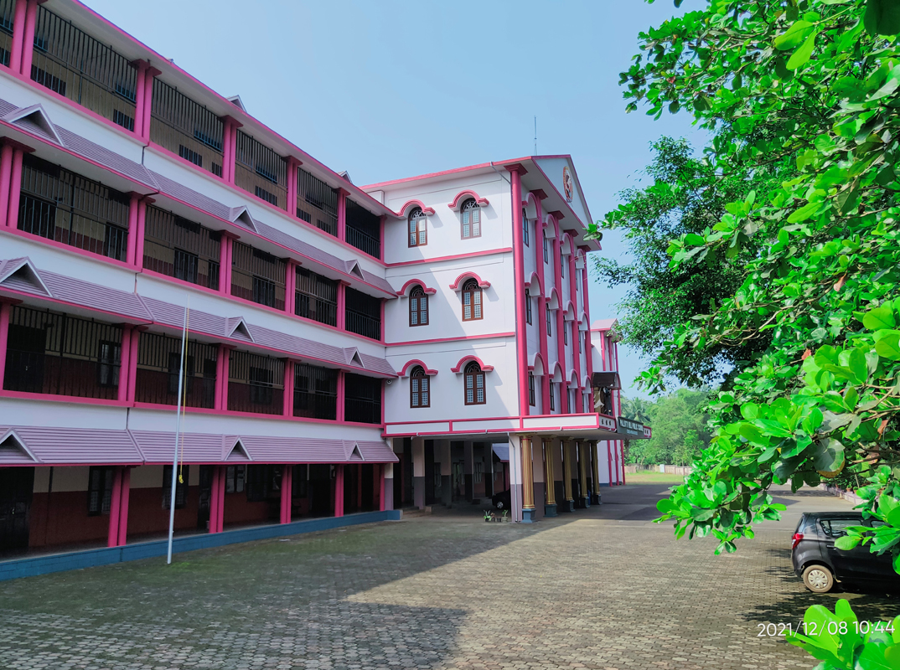

St.Vincent Pallotti was a Catholic priest who founded the society of the Catholic Apostolate (SAC), commonly known as the Pallottines, around 150 years ago. Born on April 21, 1795, Pallotti was canonized in 1963. His commitment to his apostolate led him to start orphanages, night schools and technical institutions that exist even today. Besides, he had special compassion for prisoners, soldiers and the sick. He was also the spiritual director of several Roman Colleges. The society founded by Pallotti has numerous institutions in 46 countries across the globe. In India, the Pallottines have premier educational as well as institutions of higher learning in Maharashtra, Goa, Chhattisgarh, Madhya Pradesh, Delhi, Jharkhand, Bihar, Tamil Nadu, Karnataka and Kerala. The Malabar Marian Trust which manages Pallotti Hill Public School, is a part of this International Society.
Pallotti Hill Public School, Mukkam is the realization of a great dream of St. Vincent Pallotti to impart knowledge to the ordinary people and create a society of active and effective people. The pioneer Indian Pallottines cherished the dream of their founder in their mind and waited for an opportune time and suitable place. Finally the dream was contextualized in our own soil. It was Rev. Fr. Joseph Tharakkunnel, the founder of this school, who years back conceived the idea of starting a school for providing education to the children of this area, accomplishing the dream of St. Vincent Pallotti. It was he who found Thadaparambu hill which was once a barren piece of land and was later transformed into Pallotti Hill Public School. It was in the year 1997 the school started to function formally.
The school is managed and run by Malabar Marian Trust, a Trust constituted by Pallottine Fathers. The school belongs to the Epiphany Province of Pallottine Fathers (PrabhuPrakash Province) with its head quarters at Nagpur (www.napallottines.org).At present Very Rev. Fr. Joy Palachuvattil is the Provincial Superior of Epiphany province.Rev. Fr. Anthony Kaithaparambil is at present the manger of the school. Rev. Fr. Byju Antony Puthanpurackal is the Principal of the school since 2020. Pallotti Hill Public School obtained its Syllabus Approval from CBSE Delhi in the year 2005 and Affiliation to Secondary Level in the year 2007 and up gradation to Senior Secondary Level in the year 2009.